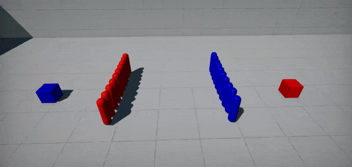
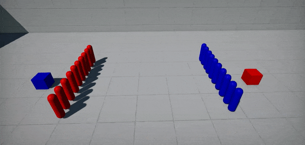

Nav Crowd
Nav Crowd is a navigation steering behaviors system for a group of agents. It handles avoidance between agents by using an adaptive RVO sampling calculation. It can be used to implement automatic avoidance and movement for a crowd of agents using navmesh.
Below you can see an example of difference between simple path following agents and agents using NavCrowd.
| Before | After |
|---|---|
|  |  |
Setup
Create gameplay system to manage crowd (as GamePlugin).
/// <summary>
/// Navigation agents crowd system using <see cref="FlaxEngine.NavCrowd"/>.
/// </summary>
public class CrowdSystem : GamePlugin
{
private NavCrowd _crowd;
private CrowdTaskGraphSystem _system;
/// <summary>
/// The maximum amount of crowd agents (at once).
/// </summary>
public int MaxAgents = 25;
internal void AddAgent(Agent007 agent)
{
if (_crowd == null)
{
// Lazy init
_crowd = new NavCrowd();
if (_crowd.Init(agent.Properties, MaxAgents))
throw new Exception("Failed to initialize crowd");
if (_system == null)
Engine.UpdateGraph.AddSystem(_system = new CrowdTaskGraphSystem { System = this });
}
// Add agent to the crowd
agent.AgentID = _crowd.AddAgent(agent.Actor.Position, agent.Properties);
if (agent.AgentID == -1)
throw new Exception("Failed to add agent to the crowd");
agent.Crowd = _crowd;
}
internal void RemoveAgent(Agent007 agent)
{
// Remove agent from the crowd
_crowd.RemoveAgent(agent.AgentID);
agent.Crowd = null;
agent.AgentID = -1;
}
/// <inheritdoc />
public override void Deinitialize()
{
// Cleanup
Engine.UpdateGraph.RemoveSystem(_system);
FlaxEngine.Object.Destroy(ref _system);
FlaxEngine.Object.Destroy(ref _crowd);
base.Deinitialize();
}
/// <summary>
/// Custom Task Graph System that updates crowd during async job.
/// </summary>
private sealed class CrowdTaskGraphSystem : TaskGraphSystem
{
internal CrowdSystem System;
/// <inheritdoc />
public override void Execute(TaskGraph graph)
{
// Schedule async job to update crowd
graph.DispatchJob(UpdateJob);
}
private void UpdateJob(int i)
{
// Update crowd simulation
System._crowd.Update(Time.DeltaTime);
}
}
}
Create path following agent script that will be attached to the actor (eg. CharacterController).
public class Agent007 : Script
{
internal NavCrowd Crowd = null;
internal int AgentID = -1;
private Vector3 _targetPos;
/// <summary>
/// The target object to follow.
/// </summary>
public Actor MoveToTarget;
/// <summary>
/// The offset applied to the actor position on moving it.
/// </summary>
public Vector3 Offset = new Vector3(0, 100, 0);
/// <summary>
/// Agent properties.
/// </summary>
public NavAgentProperties Properties = new NavAgentProperties
{
Radius = 34.0f,
Height = 144.0f,
StepHeight = 35.0f,
MaxSlopeAngle = 60.0f,
MaxSpeed = 500.0f,
CrowdSeparationWeight = 2.0f,
};
/// <inheritdoc />
public override void OnEnable()
{
// Register
PluginManager.GetPlugin<CrowdSystem>().AddAgent(this);
}
/// <inheritdoc />
public override void OnDisable()
{
// Unregister
PluginManager.GetPlugin<CrowdSystem>().RemoveAgent(this);
}
/// <inheritdoc />
public override void OnUpdate()
{
if (!MoveToTarget || !Crowd)
return;
var currentPos = Actor.Position;
var targetPos = MoveToTarget.Position;
// Check if need to change target position
if (targetPos != _targetPos)
{
_targetPos = targetPos;
Crowd.SetAgentMoveTarget(ID, targetPos);
}
// Update agent position (calculated by NavCrowd)
targetPos = Crowd.GetAgentPosition(ID) + Offset;
Actor.AddMovement(targetPos - currentPos);
}
}
As you can see, the agent logic is more straightforward than in Path Following Example. That's because you don't need to manually query navigation paths for each agent. Instead, you can set per-agent Target Location (SetAgentMoveTarget) or Target Velocity (SetAgentMoveVelocity) to reach and NavCrowd automatically calculates the agent movement. The whole crowd is updated at once (with simulation delta-time). In the example above the TaskGraphSystem performs crowd computation in async on a Job System (learn more here).